Serotoninn
Captures desktop
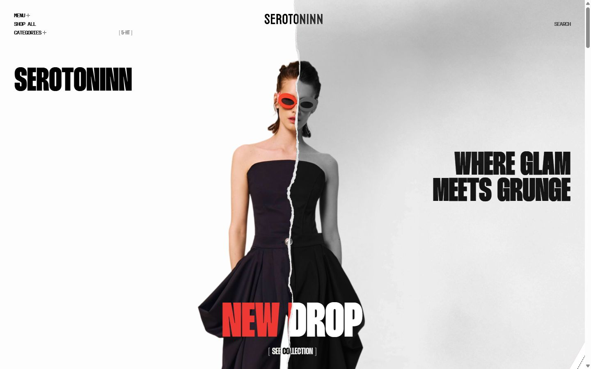
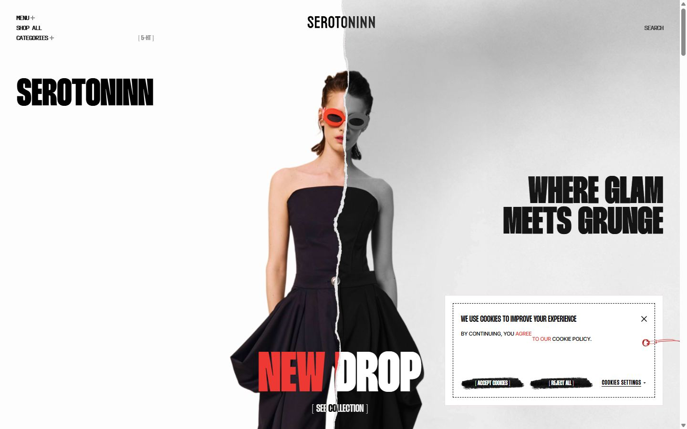
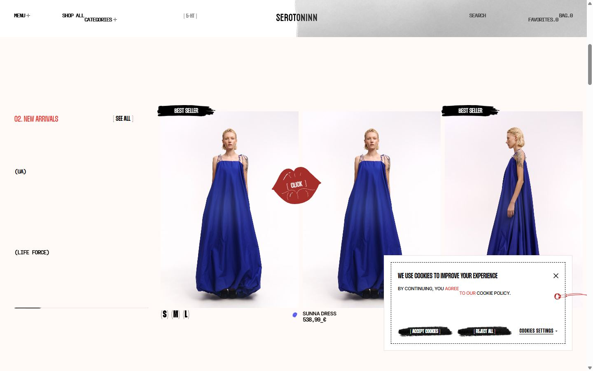
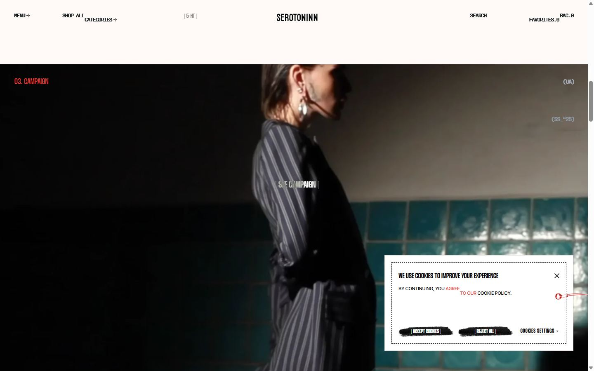
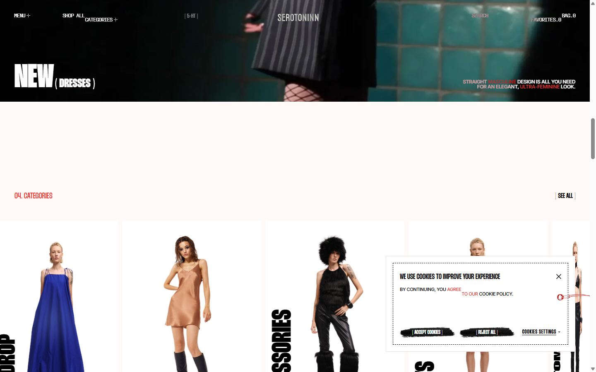
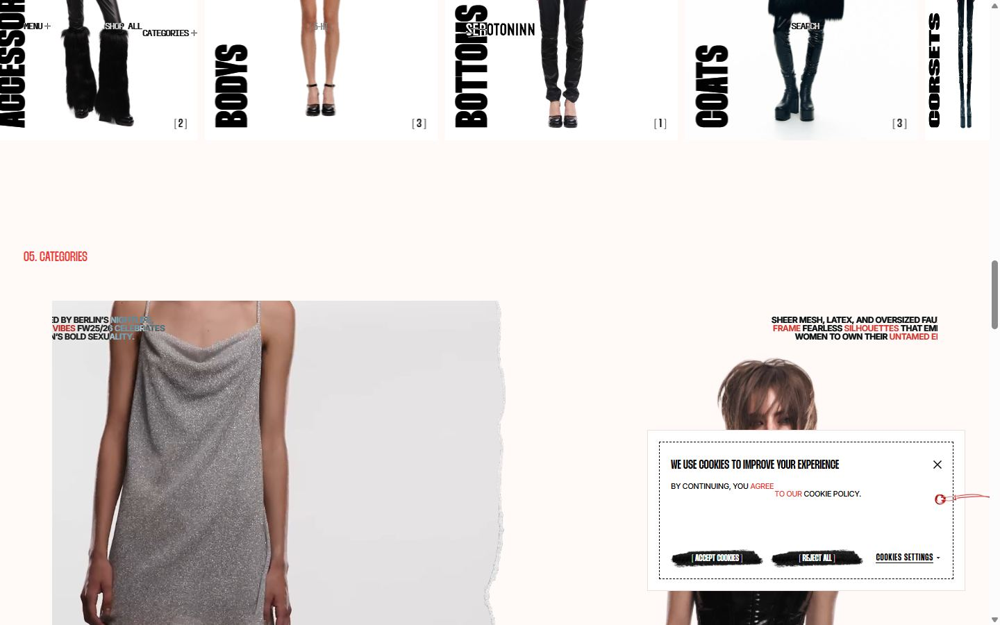
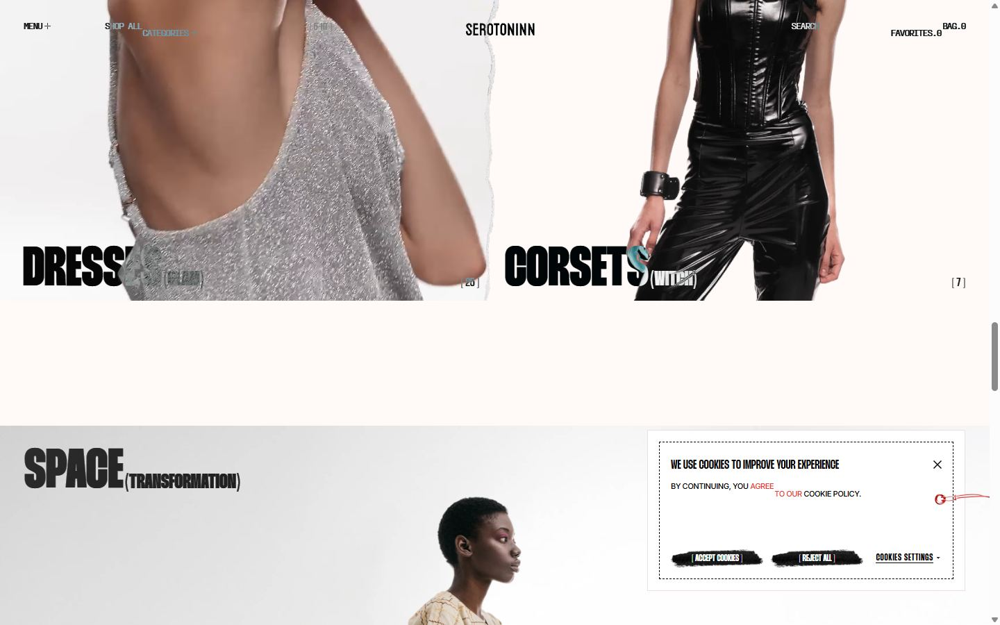
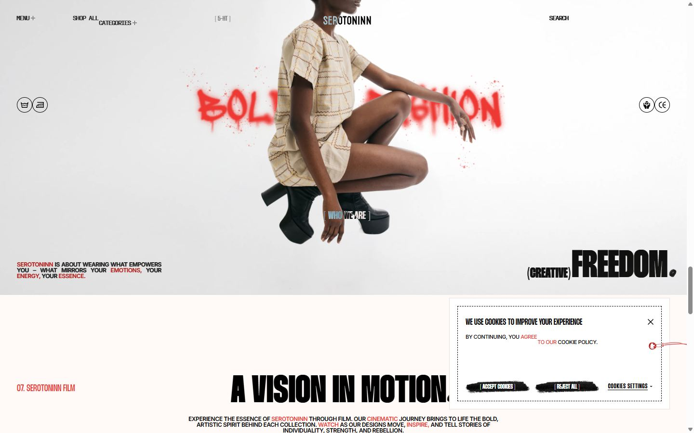
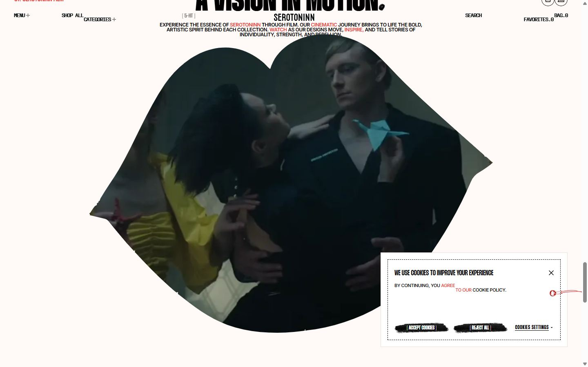
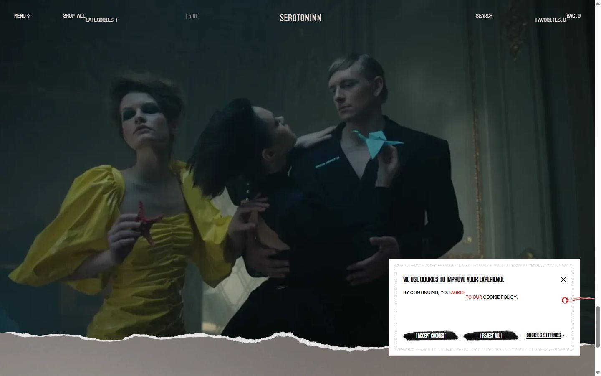
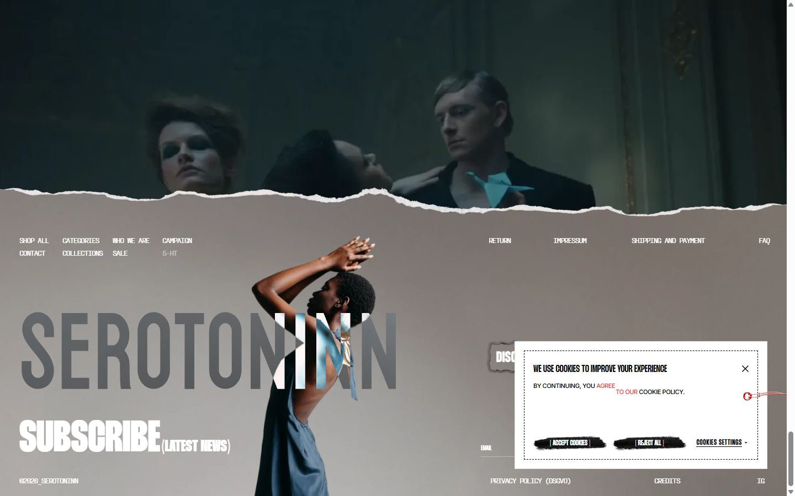
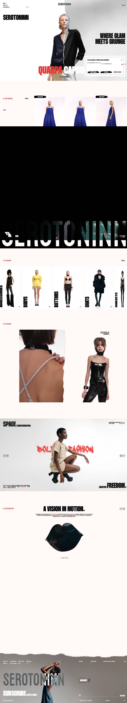
Pages internes


Mobile
Stack détectée
Barba.js, GSAP, Lenis, Lottie, ScrollTrigger, SplitText/SplitType, Swiper, Virtual scroll, WordPress, jQuery
Versions : GSAP 3.14.2 · Three.js r?
Design tokens
Couleurs (fonds, pondérées par surface)
#fff9f7 · #000000 · #ffffff
Couleurs de texte
#000000 · #ffffff · #ed3833
Polices utilisées (par volume de texte)
Thunder · Inter · PP Fraktion Mono
Fichiers de police chargés
Typographie
| Élément | Police | Taille | Graisse | Interligne | Interlettrage | Casse |
|---|---|---|---|---|---|---|
| h1 | Thunder, sans-serif | 80px | 800 | 64px | normal | uppercase |
| h2 | Thunder, sans-serif | 20px | 500 | 20px | normal | uppercase |
| h3 | Inter | 12px | 600 | 12px | -0.4px | uppercase |
| p | Thunder, sans-serif | 20px | 500 | 20px | normal | uppercase |
| a | "PP Fraktion Mono", monospace | 13px | 400 | 13px | -1.2px | uppercase |
| button | "PP Fraktion Mono", monospace | 13px | 400 | 13px | -1.2px | uppercase |
| li | Thunder, sans-serif | 10px | 400 | normal | normal | none |
| body | Thunder, sans-serif | 10px | 400 | normal | normal | none |
Échelle des tailles de texte
24px (419) · 13px (290) · 16px (217) · 12px (151) · 14px (91) · 17px (74) · 30px (60) · 64px (36) · 22px (33) · 80px (25) · 10px (18) · 18px (16) · 11px (15) · 20px (14) · 118px (10) · 9px (9)
Arrondis
aucun (angles droits)
Transitions CSS fréquentes
Points de rupture (media queries)
768px · 1024px · 767px · 1023px
Animations CSS (@keyframes)
swiper-preloader-spin, f-spinner-rotate, f-spinner-dash, f-throwOutUp, f-throwOutDown, f-zoomInUp, f-zoomOutDown, f-fadeIn, f-fadeOut, f-fadeFastIn, f-fadeFastOut, f-fadeSlowIn, f-fadeSlowOut, f-crossfadeIn, f-crossfadeOut, f-slideInPrev, f-slideInNext, f-slideOutNext, f-slideOutPrev, f-classicInNext, f-classicInPrev, f-classicOutNext, f-classicOutPrev
Variables CSS (:root)
--swiper-theme-color: #007aff; --f-spinner-width: 36px; --f-spinner-height: 36px; --f-spinner-color-1: rgba(0,0,0,.1); --f-spinner-color-2: rgba(17,24,28,.8); --f-spinner-stroke: 2.75; --f-button-width: 40px; --f-button-height: 40px; --f-button-border: 0; --f-button-border-radius: 0; --f-button-color: #374151; --f-button-bg: #f8f8f8; --f-button-hover-bg: #e0e0e0; --f-button-active-bg: #d0d0d0; --f-button-shadow: none; --f-button-transition: all .15s ease; --f-button-transform: none; --f-button-svg-width: 20px; --f-button-svg-height: 20px; --f-button-svg-stroke-width: 1.5; --f-button-svg-fill: none; --f-button-svg-filter: none; --f-button-svg-disabled-opacity: .65; --wp--preset--aspect-ratio--square: 1; --wp--preset--aspect-ratio--4-3: 4/3; --wp--preset--aspect-ratio--3-4: 3/4; --wp--preset--aspect-ratio--3-2: 3/2; --wp--preset--aspect-ratio--2-3: 2/3; --wp--preset--aspect-ratio--16-9: 16/9; --wp--preset--aspect-ratio--9-16: 9/16; --wp--preset--color--black: #000000; --wp--preset--color--cyan-bluish-gray: #abb8c3; --wp--preset--color--white: #ffffff; --wp--preset--color--pale-pink: #f78da7; --wp--preset--color--vivid-red: #cf2e2e; --wp--preset--color--luminous-vivid-orange: #ff6900; --wp--preset--color--luminous-vivid-amber: #fcb900; --wp--preset--color--light-green-cyan: #7bdcb5; --wp--preset--color--vivid-green-cyan: #00d084; --wp--preset--color--pale-cyan-blue: #8ed1fc; --wp--preset--color--vivid-cyan-blue: #0693e3; --wp--preset--color--vivid-purple: #9b51e0; --wp--preset--gradient--vivid-cyan-blue-to-vivid-purple: linear-gradient(135deg,rgb(6,147,227) 0%,rgb(155,81,224) 100%); --wp--preset--gradient--light-green-cyan-to-vivid-green-cyan: linear-gradient(135deg,rgb(122,220,180) 0%,rgb(0,208,130) 100%); --wp--preset--gradient--luminous-vivid-amber-to-luminous-vivid-orange: linear-gradient(135deg,rgb(252,185,0) 0%,rgb(255,105,0) 100%); --wp--preset--gradient--luminous-vivid-orange-to-vivid-red: linear-gradient(135deg,rgb(255,105,0) 0%,rgb(207,46,46) 100%); --wp--preset--gradient--very-light-gray-to-cyan-bluish-gray: linear-gradient(135deg,rgb(238,238,238) 0%,rgb(169,184,195) 100%); --wp--preset--gradient--cool-to-warm-spectrum: linear-gradient(135deg,rgb(74,234,220) 0%,rgb(151,120,209) 20%,rgb(207,42,186) 40%,rgb(238,44,130) 60%,rgb(251,105,98) 80%,rgb(254,248,76) 1; --wp--preset--gradient--blush-light-purple: linear-gradient(135deg,rgb(255,206,236) 0%,rgb(152,150,240) 100%); --wp--preset--gradient--blush-bordeaux: linear-gradient(135deg,rgb(254,205,165) 0%,rgb(254,45,45) 50%,rgb(107,0,62) 100%); --wp--preset--gradient--luminous-dusk: linear-gradient(135deg,rgb(255,203,112) 0%,rgb(199,81,192) 50%,rgb(65,88,208) 100%); --wp--preset--gradient--pale-ocean: linear-gradient(135deg,rgb(255,245,203) 0%,rgb(182,227,212) 50%,rgb(51,167,181) 100%); --wp--preset--gradient--electric-grass: linear-gradient(135deg,rgb(202,248,128) 0%,rgb(113,206,126) 100%); --wp--preset--gradient--midnight: linear-gradient(135deg,rgb(2,3,129) 0%,rgb(40,116,252) 100%); --wp--preset--font-size--small: 13px; --wp--preset--font-size--medium: 20px; --wp--preset--font-size--large: 36px; --wp--preset--font-size--x-large: 42px; --wp--preset--spacing--20: 0.44rem; --wp--preset--spacing--30: 0.67rem; --wp--preset--spacing--40: 1rem; --wp--preset--spacing--50: 1.5rem; --wp--preset--spacing--60: 2.25rem; --wp--preset--spacing--70: 3.38rem; --wp--preset--spacing--80: 5.06rem; --wp--preset--shadow--natural: 6px 6px 9px rgba(0, 0, 0, 0.2); --wp--preset--shadow--deep: 12px 12px 50px rgba(0, 0, 0, 0.4); --wp--preset--shadow--sharp: 6px 6px 0px rgba(0, 0, 0, 0.2); --wp--preset--shadow--outlined: 6px 6px 0px -3px rgb(255, 255, 255), 6px 6px rgb(0, 0, 0); --wp--preset--shadow--crisp: 6px 6px 0px rgb(0, 0, 0);
Structure de la home
Hauteur : 7833 px — 3678 nœuds DOM — canvas 0, vidéos 31, images 395
| # | Bloc | Hauteur | Titre | Médias |
|---|---|---|---|---|
| 1 | div .pin-spacer | 900 | Serotoninn | 25 |
| 2 | section .arrivals-section | 876 | 02. New Arrivals | 152 |
| 3 | section .campaign-section | 900 | 03. Campaign | 1 |
| 4 | section .categories-section | 926 | 04. CATEGORIES | 148 |
| 5 | section .best-section | 1061 | 05. CATEGORIES | 4 |
| 6 | section .bold-section | 810 | SPACE (transformation) | 10 |
| 7 | section .motion-section | 1800 | 07. serotoninn film | 4 |
Navigation : Shop all · [ 5-HT ]
Boutons / CTA :
SEO
Plan des titres
Performance (mesure locale, Chrome headless, connexion non bridée)
Mobile
Fichiers
captures/ : arrivée, scroll desktop (1440×900), pleine page, pages internes, mobile (390×844 @2x) ; vidéo de scroll dans la release GitHub « videos » (lien en haut de fiche)page.html : DOM rendu · styles.css : CSS chargé · scripts/ : JS chargé (index dans _index.json) · shaders.glsl : shaders extraits · rea-bundle.json : analyse REA du bundle (chunks, routes, endpoints)